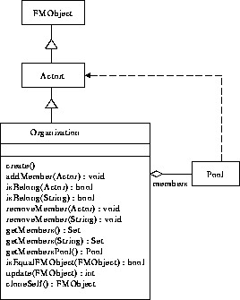

実現方式
前述したように、機能としての組織ならば、Poolのみで
同様のことが実現可能だが、組織としての人格権を
付与するため、以下に示す組織管理を専門に行う
Organizatioクラスにより組織管理を実現した。

Figure: 組織管理 オブジェクトモデル図
このモデルによる、前述された以下の項目の実現方法を示す。
- 組織への人の配置
- 組織からの人の除外
- 配置されている人の確認
- 配置されている人の呼び出し
- 役割の代替
- 組織への配置
Copyright(c) 1996-1998 IPA, ETL, AT21, FSIABC, FXIS, InArc, MRI, NUL, SBC, Sharp, TEC, TIS
Contact: oz-admin@oz.ipa.go.jp